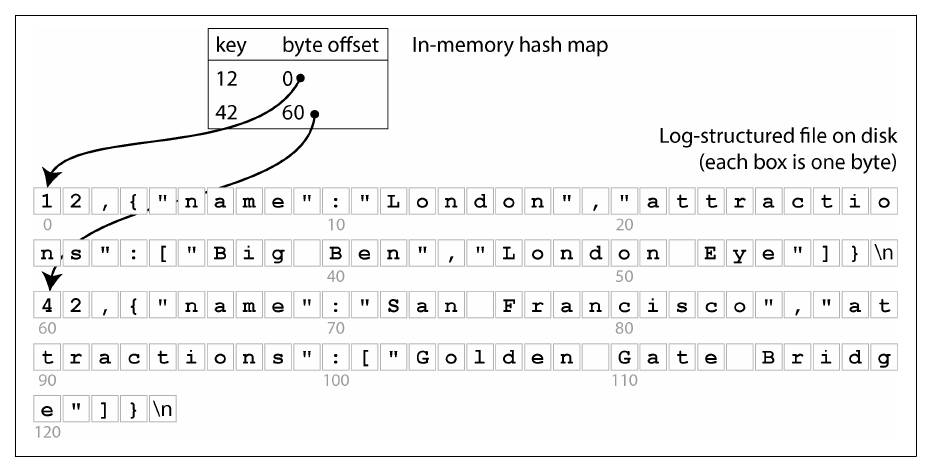
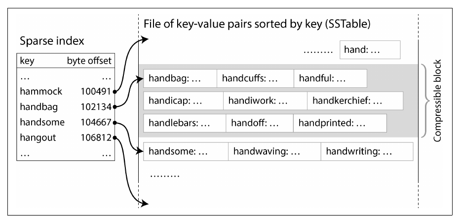
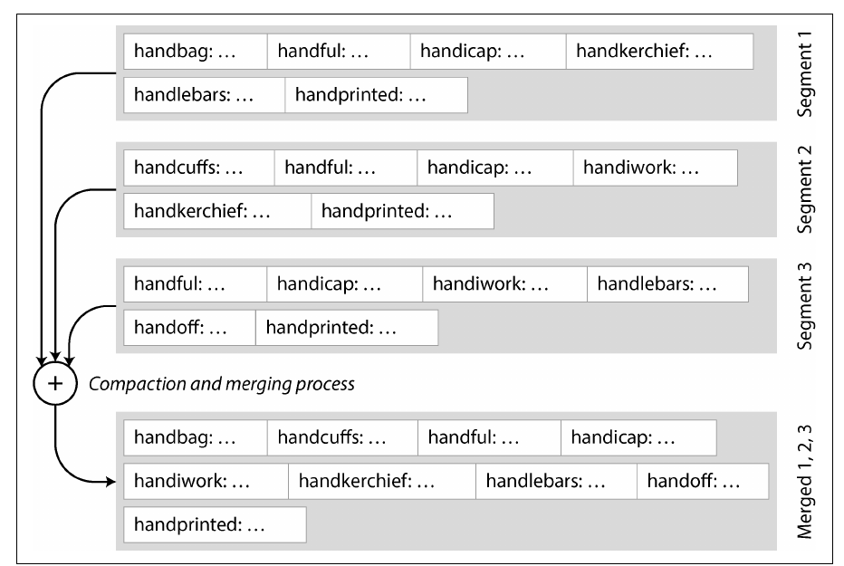
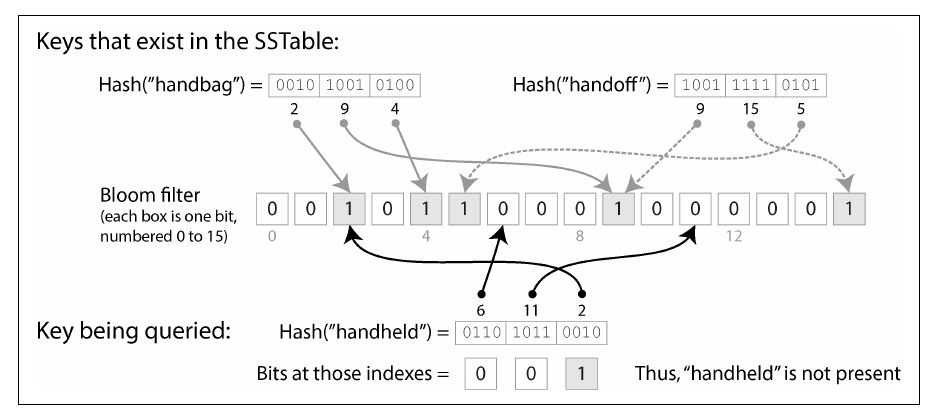
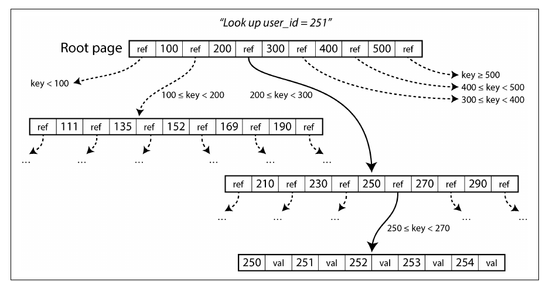
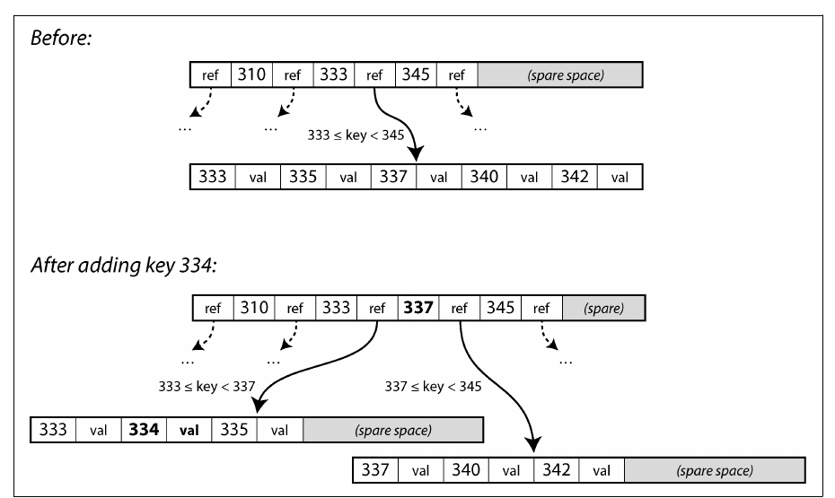
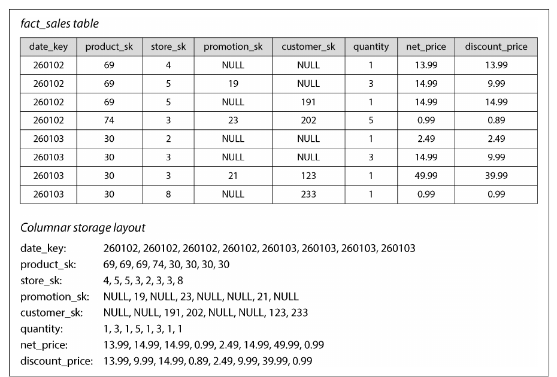
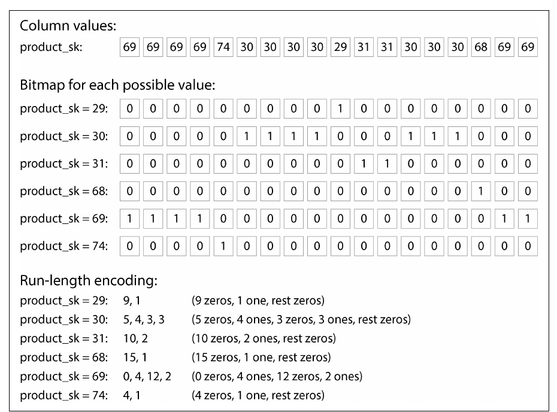
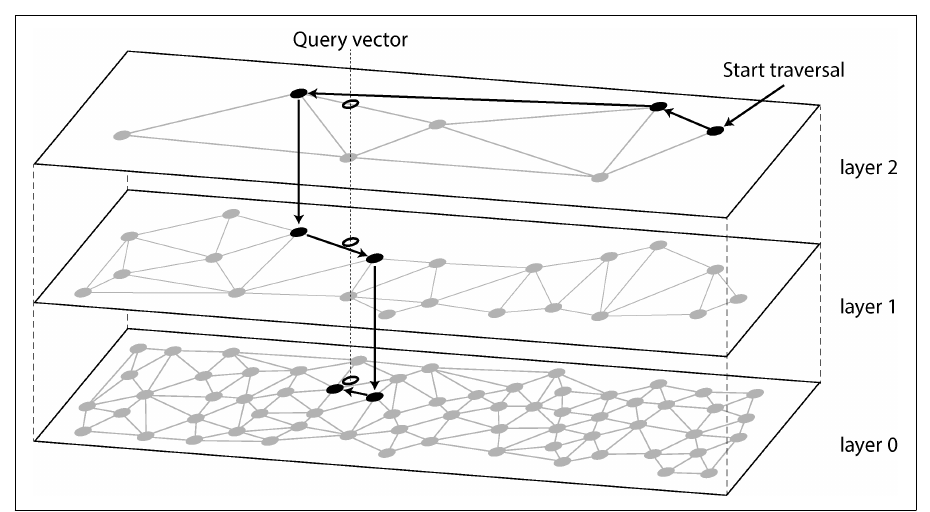

فصل ۴ · صص. ۱۱۵–۱۶۰
ذخیرهسازی و بازیابی
Storage and Retrieval
Designing Data-Intensive Applications, 2nd Edition
وقتی دیتابیس دادهی شما را ذخیره میکند و دوباره پیدایش میکند، واقعاً چه اتفاقی میافتد؟ این فصل storage engine را از سادهترین شکل ممکن، یعنی یک فایل append-only، میسازد و به دو مکتب ذخیرهسازی OLTP میرسد: engineهای log-structured مثل SSTable و LSM-tree که هیچوقت فایل را در جا عوض نمیکنند، و engineهای update-in-place مثل B-tree که pageهای اندازهثابت را بازنویسی میکنند. بعد نشان میدهد چرا تحلیل چیدمان کاملاً متفاوتی میخواهد: ذخیرهسازی column-oriented همراه با فشردهسازی، اجرای vectorized یا compiled کوئری و aggregateهای materialized. فصل با indexهای چندبعدی، جستوجوی full-text و vector embedding برای semantic search تمام میشود. فهم این جزئیات کمک میکند دیتابیس را برای workload خودتان انتخاب و تنظیم کنید، به جای اینکه با آن مثل جعبهی سیاه رفتار کنید.
فهرست خود فصل (از فهرست مطالب کتاب)
- ذخیرهسازی و indexing برای OLTP (ص. ۱۱۶)
- ذخیرهسازی log-structured (ص. ۱۱۸)
- ساختار B-tree (ص. ۱۲۵)
- مقایسهی B-tree و LSM-tree (ص. ۱۲۹)
- مفهوم multicolumn index و secondary index (ص. ۱۳۲)
- ذخیرهی مقدار داخل index (ص. ۱۳۳)
- نگه داشتن همهچیز در حافظه (ص. ۱۳۳)
- ذخیرهسازی داده برای تحلیل (ص. ۱۳۴)
- مفهوم cloud data warehouse (ص. ۱۳۵)
- ذخیرهسازی column-oriented (ص. ۱۳۶)
- اجرای کوئری: compilation و vectorization (ص. ۱۴۲)
- مفهوم materialized view و data cube (ص. ۱۴۳)
- انواع index چندبعدی و full-text (ص. ۱۴۵)
- جستوجوی full-text (ص. ۱۴۶)
- مفهوم vector embedding (ص. ۱۴۷)
- جمعبندی (ص. ۱۵۰)
از کتاب
مقدمه
هر دیتابیس دو کار میکند: دادهای را که به آن میدهید ذخیره میکند و بعداً پس میدهد. شما storage engine نمینویسید، اما باید یکی را انتخاب و تنظیم کنید؛ و engineهای OLTP و تحلیلی با هم تفاوت بزرگی دارند (ص. ۱۱۵).
امتحان کنید
فصل ۴ در طول یک pipeline داده
باز کردن در صفحهی کامل ↗ · این شبیهسازی مدل خود vault از سازوکاری است که کتاب شرح میدهد.
از کتاب
ذخیرهسازی و indexing برای OLTP
«سادهترین دیتابیس دنیا» دو تابع bash است (ص. ۱۱۶):
db_set () { echo "$1,$2" >> database; }
db_get () { grep "^$1," database | sed -e "s/^$1,//" | tail -n 1; }تابع db_set فقط append میکند و خیلی سریع است؛ updateها نسخههای قدیمی را جا میگذارند، پس db_get آخرین تطابق را برمیدارد. خیلی از دیتابیسها دقیقاً همین ساختار را به کار میبرند: یک log، یعنی دنبالهای append-only از رکوردها، نه log اپلیکیشن. اما db_get همهچیز را اسکن میکند: O(n) (ص. ۱۱۷). هر index ساختاری اضافه است که از داده derive میشود؛ اضافه یا حذف کردنش فقط performance را عوض میکند، نه محتوا را. هر index بعضی خواندنها را سریعتر و همهی نوشتنها را کندتر میکند، برای همین انتخاب indexها با خود شماست (ص. ۱۱۷).
لایهی Bronze در reference stack همین log است: loader هر نسخهی تازهی ردیف را append میکند و هیچ چیزی را در جا عوض نمیکند. لایهی Silver همان tail -n 1 است: جدیدترین نسخهی هر id.
?نوبت شما · کوئری Silver با ROW_NUMBER() OVER (PARTITION BY id ORDER BY update_date DESC) جدیدترین نسخه را انتخاب میکند. با بزرگ شدن Bronze، این کوئری چرا هر روز کندتر میشود؟دیدن پاسخ
چون مثل db_get کل log را اسکن میکند و هزینهاش O(n) است (ص. ۱۱۷). راه کتاب ساختن ساختاری derived است: Silver را به شکل incremental بهروز کنید تا فقط نسخههای تازه پردازش شوند، یا جدولی نگه دارید که خودش در merge نسخههای قدیمی را دور بریزد.
ذخیرهسازی و indexing برای OLTP
ذخیرهسازی log-structured
صص. ۱۱۸–۱۲۵نقطهی شروع یک hash index روی همان log است (شکل ۴-۱): یک hash map در حافظه که هر کلید را به byte offset آخرین مقدارش map میکند. سریع است، اما چهار ضعف دارد (صص. ۱۱۸–۱۱۹): رکوردهای قدیمی هیچوقت فضای دیسک را آزاد نمیکنند؛ بعد از restart باید map را با اسکن کل log دوباره ساخت؛ همهی کلیدها باید در حافظه جا شوند، چون hash map روی دیسک performance بدی دارد؛ و range query ناکارآمد است، مثلاً همهی کلیدهای ۱۰۰۰۰ تا ۱۹۹۹۹ را باید یکییکی جست.


چهار قدم بعدی همین ضعفها را یکییکی برطرف میکنند: فایل مرتب، memtable، Bloom filter و compaction.
ذخیرهسازی log-structured
فرمت فایل SSTable
ص. ۱۱۹در عمل hash table کمتر برای index دیتابیس به کار میرود؛ رایجتر ساختاری است که بر اساس کلید مرتب است. یک SSTable یا Sorted String Table جفتهای key-value را مرتب نگه میدارد و هر کلید فقط یک بار در فایل میآید (شکل ۴-۲).
- ساختار sparse index: دیگر لازم نیست همهی کلیدها در حافظه باشند. جفتها در بلوکهای چندکیلوبایتی گروه میشوند و فقط اولین کلید هر بلوک در index میرود. خود این index در بخش جداگانهای از SSTable ذخیره میشود، مثلاً با یک B-tree immutable یا یک trie.
- جستوجو: کلید
handiworkدر index نیست، اما چون کلیدها مرتباند باید بینhandbagوhandsomeباشد؛ به offset بلوکhandbagبروید و تا پیدا شدنش اسکن کنید. اسکن یک بلوک چندکیلوبایتی خیلی سریع است. - فشردهسازی: هر بلوک را میشود فشرده کرد؛ هم فضای دیسک کم میشود و هم پهنای باند I/O، به قیمت کمی CPU بیشتر.


ذخیرهسازی log-structured
ساختن و merge کردن SSTableها
صص. ۱۲۰–۱۲۲فایل مرتب برای خواندن بهتر است، اما نوشتن را سخت میکند: append در انتهای فایل ترتیب را خراب میکند و بازنویسی کل فایل برای هر درج خیلی گران است. راهحل یک ترکیب از log و فایل مرتب است (صص. ۱۲۰–۱۲۱):
- نوشتنها به یک ordered map در حافظه میروند که اسمش memtable است؛ مثلاً red-black tree، skip list یا trie، که کلید را به هر ترتیبی میگیرند و مرتب پس میدهند.
- وقتی memtable از آستانهای، معمولاً چند مگابایت، بزرگتر شد، به شکل یک segment تازهی SSTable روی دیسک نوشته میشود؛ در همین حین نوشتنها در یک memtable تازه ادامه پیدا میکنند.
- هر خواندن اول memtable را میگردد، بعد segmentها را از جدید به قدیم؛ اگر در هیچکدام نبود، کلید وجود ندارد.
- گاهبهگاه در پسزمینه segmentها merge و compact میشوند تا مقدارهای بازنویسیشده و حذفشده دور ریخته شوند.


- ساختار WAL: یک log جداگانه و نامرتب که هر نوشتن فوراً به آن append میشود، memtable را در برابر crash محافظت میکند؛ بعد از هر flush، بخش متناظرش دور ریخته میشود (ص. ۱۲۰).
- مفهوم tombstone: حذف یعنی append کردن یک رکورد حذف ویژه؛ در merge، tombstone مقدارهای قبلی را کنار میگذارد و وقتی به قدیمیترین segment رسید خودش هم حذف میشود (ص. ۱۲۱).
- ساختار immutable: هر segment یک بار نوشته میشود و بعد عوض نمیشود. در حین merge خواندنها از segmentهای ورودی ادامه پیدا میکنند و بعد به segment تازه سوئیچ میشوند؛ فایل نیمهکاره بعد از crash بهسادگی حذف میشود؛ checksum رکوردهای ناقص log را پیدا میکند؛ و segmentها به object storage هم میخورند، مثل SlateDB و Delta Lake (صص. ۱۲۱–۱۲۲).
این الگوریتم RocksDB، Cassandra، ScyllaDB و HBase است، با الهام از مقالهی Bigtable که اسمهای SSTable و memtable را ساخت، و برگرفته از مقالهی Log-Structured Merge-tree در ۱۹۹۶؛ برای همین به این engineها LSM میگویند (ص. ۱۲۱).
flowchart TB
W[Write] --> WAL[(Log on disk<br/>append, for recovery only)]
W --> MT["Memtable<br/>(sorted, in memory)"]
MT -- "full → flush" --> S1[(SSTable newest)]
S1 & S2[(SSTable older)] & S3[(SSTable oldest)] -- "compaction<br/>(merge, drop overwritten + tombstones)" --> SC[(Compacted SSTable)]
R[Read] --> MT
R -. "then, newest first,<br/>skip via Bloom filter" .-> S1 --> S2 --> S3جدولهای MergeTree در warehouse ستونی reference stack یک LSM-tree هستند: هر INSERT یک part مرتب و immutable روی دیسک مینویسد و merge در پسزمینه partها را با هم یکی میکند. primary index همان sparse index شکل ۴-۲ است: یک ورودی برای هر چند هزار ردیف، نه برای هر ردیف.
?نوبت شما · یک تیم پیشنهاد میدهد loader به جای bulk insert ساعتی، هر چند ثانیه چند ردیف INSERT کند تا داشبوردها تازهتر باشند. چه چیزی خراب میشود؟دیدن پاسخ
هر INSERT یک part تازه میسازد، مثل flush شدن یک memtable کوچک. partهای کوچکِ زیاد یعنی compaction بیشتر، write amplification بالاتر و خواندنهایی که باید فایلهای بیشتری را بگردند (صص. ۱۲۱–۱۲۴). نوشتنها را در batchهای بزرگ جمع کنید؛ همان کاری که bulk INSERT … SELECT از staging میکند.
امتحان کنید
درون یک LSM-tree
باز کردن در صفحهی کامل ↗ · این شبیهسازی مدل خود vault از سازوکاری است که کتاب شرح میدهد.
ذخیرهسازی log-structured
ساختار Bloom filter
صص. ۱۲۲–۱۲۳در LSM خواندن کلیدی که خیلی وقت پیش بهروز شده، یا کلیدی که اصلاً وجود ندارد، کند است، چون باید چند segment گشته شود. برای همین بیشتر engineهای LSM در هر segment یک Bloom filter میگذارند: راهی سریع اما تقریبی برای پرسیدن «این کلید در این SSTable هست؟» (ص. ۱۲۲).


| مرحله | چه اتفاقی میافتد (صص. ۱۲۲–۱۲۳) |
|---|---|
| ساختن | برای هر کلید SSTable یک hash حساب میشود که چند عدد میدهد؛ بیتهای همان شمارهها ۱ میشوند و بقیه ۰ میمانند. آرایهی بیتی کنار sparse index در SSTable ذخیره میشود و معمولاً در برابر بقیهی فایل کوچک است |
| کوئری | همان hash برای کلید کوئری حساب و بیتهایش با عملیات بیتی CPU چک میشوند، که خیلی سریع است |
| دستکم یک بیت ۰ | کلید قطعاً در این SSTable نیست؛ فایل بدون خواندن رد میشود |
| همهی بیتها ۱ | کلید احتمالاً هست؛ شاید بیتها را کلیدهای دیگر روشن کرده باشند. این حالت false positive است |
- اندازهی فیلتر: احتمال false positive به تعداد کلیدها، تعداد بیتهایی که هر کلید روشن میکند و اندازهی کل آرایه بستگی دارد. قاعدهی سرانگشتی کتاب: ۱۰ بیت برای هر کلید یعنی حدود ۱٪ false positive، و هر ۵ بیت بیشتر این احتمال را ده برابر کم میکند (ص. ۱۲۳).
- چرا false positive در LSM ضرری ندارد: جواب «نیست» اجازه میدهد SSTable با اطمینان رد شود. جواب «هست» یعنی sparse index و بلوک خوانده میشوند؛ اگر false positive بود، فقط کمی کار اضافه شده و جستوجو در segment قدیمیتر بعدی ادامه پیدا میکند (ص. ۱۲۳).
- حد کارش: فیلتر فقط به سؤال «این کلید دقیق» جواب میدهد؛ برای range query باید hash همهی کلیدهای ممکن بازه را حساب کرد، که عملی نیست (ص. ۱۲۹).
warehouse ستونی reference stack هم indexهای skipping از همین خانواده دارد: برای هر granule، یعنی چند هزار ردیف، یک Bloom filter روی ستونی مثل customer_id نگه میدارد تا granuleهایی که قطعاً مقدار را ندارند خوانده نشوند.
?نوبت شما · کسی روی ستون status با سه مقدار ممکن یک Bloom filter index ساخته و کوئریها سریعتر نشدهاند. چرا؟دیدن پاسخ
تقریباً هر granule هر سه مقدار را دارد، پس فیلتر برای هر granule «شاید هست» میگوید و هیچچیز رد نمیشود. Bloom filter وقتی کمک میکند که بیشتر جوابها «قطعاً نیست» باشند (صص. ۱۲۲–۱۲۳)؛ یعنی ستونی با مقدارهای زیاد و پراکنده، مثل شناسهها.
امتحان کنید
درون یک Bloom filter
باز کردن در صفحهی کامل ↗ · این شبیهسازی مدل خود vault از سازوکاری است که کتاب شرح میدهد.
ذخیرهسازی log-structured
راهبردهای compaction
ص. ۱۲۴نکتهی مهم این است که LSM کی compaction را اجرا کند و کدام SSTableها را در آن بگذارد؛ خیلی از سیستمها اجازه میدهند راهبرد را انتخاب کنید:
| Size-tiered | Leveled | |
|---|---|---|
| روش | SSTableهای جدیدتر و کوچکتر پشت سر هم در SSTableهای قدیمیتر و بزرگتر merge میشوند؛ مثلاً چهار فایل ۲۵۶ مگابایتی به یک فایل ۸۹۸ مگابایتی تبدیل میشوند، نه ۱۰۲۴، به خاطر حذفها، بازنویسیها و TTL | SSTableهای اندازهثابت در سطحهای L0، L1 و…؛ L0 تازهترین داده است و بعد از آن هر سطح بر اساس بازهی کلید پارتیشن شده، مثلاً L1 از a تا m و از n تا z؛ هر سطح از قبلی بزرگتر است و سرریزش به سطح بعد merge میشود |
| نقطهی قوت | throughput نوشتن خیلی بالا: بیشتر داده فقط چند بار و در mergeهای بزرگ ترتیبی بازنویسی میشود | تدریجی است، فضای دیسک کمتری میگیرد و هر خواندن SSTableهای کمتری را میگردد |
| نقطهی ضعف | SSTableهای قدیمی خیلی بزرگ؛ دیسک موقت زیاد در حین merge | بازنویسی بیشتر |
| قاعدهی سرانگشتی | بیشتر نوشتن، خواندن کم | خواندن غالب؛ یا چند کلید داغ که زیاد نوشته میشوند و کلیدهای زیادی که کم |
ایدهی پایه، یعنی آبشاری از SSTableها که در پسزمینه merge میشوند، ساده و مؤثر است، و بیشتر پیادهسازیها چند راهبرد برای workloadهای مختلف دارند (ص. ۱۲۴).
ذخیرهسازی log-structured
انواع embedded storage engine
ص. ۱۲۵خیلی از دیتابیسها سرویسیاند که کوئری را از شبکه میگیرند؛ اما embedded database کتابخانهای است داخل process اپلیکیشن که فایلهای دیسک محلی را میخواند و مینویسد و با فراخوانی تابع با آن کار میکنید؛ مثل RocksDB، SQLite، LMDB، DuckDB و KùzuDB. در اپهای موبایل برای دادهی کاربر محلی رایجاند؛ در backend وقتی مناسباند که داده روی یک ماشین جا شود و transactionهای همزمان زیاد نباشند؛ مثلاً در یک سیستم multitenant که tenantها کوچک و کاملاً جدا از هماند، میشود برای هر tenant یک instance جدا داشت (ص. ۱۲۵).
ذخیرهسازی و indexing برای OLTP
ساختار B-tree
صص. ۱۲۵–۱۲۹ساختار B-tree در ۱۹۷۰ معرفی شد و کمتر از ده سال بعد «همهجایی» خوانده شد، و هنوز index استاندارد تقریباً همهی دیتابیسهای relational است (ص. ۱۲۵). مثل SSTable کلیدها را مرتب نگه میدارد، اما فلسفهاش فرق دارد: دیتابیس را به pageهای اندازهثابت تقسیم میکند، که بهطور سنتی ۴ KiB است، در PostgreSQL ۸ KiB و در MySQL ۱۶ KiB، و pageها را در جا بازنویسی میکند. هر page یک شماره دارد و pageها با همین شماره به هم ارجاع میدهند، مثل pointer اما روی دیسک (ص. ۱۲۵).
- جستوجو (شکل ۴-۵): از ریشه شروع کنید؛ هر page کلیدها و ارجاعهایی به فرزندان دارد که بازهی کلید را تقسیم میکنند. برای پیدا کردن ۲۵۱ اول فرزند ۲۰۰ تا ۳۰۰، بعد ۲۵۰ تا ۲۷۰، تا به یک leaf برسید که مقدار یا ارجاع را نگه میدارد. تعداد فرزندان هر page همان branching factor است؛ در شکل ۶ و در عمل چند صد (ص. ۱۲۶).
- درج (شکل ۴-۶): page پر split میشود؛ درج ۳۳۴ در page پر ۳۳۳ تا ۳۴۵ دو page ۳۳۳ تا ۳۳۷ و ۳۳۷ تا ۳۴۵ میسازد و کلید مرزی ۳۳۷ به والد اضافه میشود؛ splitها ممکن است تا بالا ادامه پیدا کنند و ریشهی تازه بسازند. عمق درخت O(log n) میماند: سه یا چهار سطح برای بیشتر دیتابیسها کافی است؛ چهار سطح page چهار کیلوبایتی با branching factor ۵۰۰ تا ۲۵۰ ترابایت جا میدهد (ص. ۱۲۷).




امتحان کنید
pageها، جستوجو و split در B-tree
باز کردن در صفحهی کامل ↗ · این شبیهسازی مدل خود vault از سازوکاری است که کتاب شرح میدهد.
ساختار B-tree
قابل اطمینان کردن B-tree
صص. ۱۲۷–۱۲۸عمل پایهی B-tree بازنویسی یک page روی دیسک است، با این فرض که جای page عوض نمیشود و همهی ارجاعها به آن سالم میمانند؛ درست برعکس LSM که فقط append میکند و فایلها را در جا عوض نمیکند (صص. ۱۲۷–۱۲۸).
| خطر | چه میشود (ص. ۱۲۸) |
|---|---|
| crash وسط split | فقط بعضی pageها نوشته شدهاند و درخت خراب است؛ مثلاً یک orphan page که فرزند هیچ والدی نیست |
| نوشتن غیراتمیک page | اگر سختافزار نتواند یک page کامل را اتمیک بنویسد، یک torn page نیمهنوشته میماند |
راهحل رایج یک write-ahead log است: فایل append-only که هر تغییر B-tree باید پیش از اعمال روی pageها در آن نوشته شود، و بعد از crash درخت را به حالت سازگار برمیگرداند؛ در فایلسیستمها به همین journaling میگویند. برای performance، pageهای تغییرکرده مدتی در حافظه buffer میشوند؛ هر چیزی که در WAL نوشته و با fsync روی دیسک flush شده durable است (ص. ۱۲۸).
دو دیتابیس منبع reference stack row store هستند و indexهایشان B-tree است. loader هر ساعت از replica میپرسد WHERE update_date > :cursor.
?نوبت شما · هر ساعت که loader اجرا میشود replica کند میشود و lag پیدا میکند. در خود دیتابیس منبع چه چیزی را بررسی میکنید؟دیدن پاسخ
اینکه روی update_date یک B-tree index هست یا نه. با index، شرط cursor یک range scan روی leafهای مرتب است و فقط ردیفهای تازه را میخواند (صص. ۱۲۶–۱۲۸)؛ بدون index، هر اجرا کل جدول را اسکن میکند. چون تیم داده صاحب منبع نیست، این درخواستی است برای صاحبان آن، همراه با شاهدش.
ساختار B-tree
گونههای B-tree
ص. ۱۲۸| گونه | ایده |
|---|---|
| copy-on-write به جای WAL، مثل LMDB | page تغییرکرده جای دیگری نوشته میشود و نسخهی تازهای از والدها به آن اشاره میکند؛ برای snapshot isolation هم به کار میآید |
| کلید کوتاهشده | pageهای داخلی فقط باید مرز بازهها را نشان بدهند؛ کلید کوتاهتر یعنی کلید بیشتر در هر page، branching factor بالاتر و سطح کمتر |
| leafهای ترتیبی روی دیسک | range scan با seek کمتر؛ اما نگه داشتن این ترتیب با رشد درخت سخت است |
| اشارهگر بین leafهای همسطح | اسکن مرتب کلیدها بدون برگشتن به pageهای والد |
ذخیرهسازی و indexing برای OLTP
مقایسهی B-tree و LSM-tree
صص. ۱۲۹–۱۳۲قاعدهی سرانگشتی: LSM-tree برای اپلیکیشنهای پرنوشتن، B-tree برای خواندن سریعتر؛ اما benchmarkها به جزئیات workload حساساند، پس سیستم را با workload خودتان تست کنید. انتخاب هم صفر و یک نیست: engineها گاهی ویژگی هر دو را ترکیب میکنند، مثلاً چند B-tree که به سبک LSM merge میشوند (ص. ۱۲۹).
| جنبه | LSM-tree | B-tree |
|---|---|---|
| خواندن نقطهای | چند SSTable؛ Bloom filter I/O را کم میکند | یک page در هر سطح؛ سریع و قابل پیشبینی |
| نوشتن | ترتیبی، کل segment یکجا | تصادفی، pageهای پراکنده |
| write amplification | معمولاً کمتر | دستکم دو بار، WAL و page |
| فضای دیسک | بدون page نیمهخالی، فشردهتر | fragmentation و نیاز به vacuum |
مقایسهی B-tree و LSM-tree
کارایی خواندن
ص. ۱۲۹- کلید تکی: در B-tree یعنی خواندن یک page در هر سطح؛ چون سطحها کماند، خواندن سریع و قابل پیشبینی است. در LSM خواندن اغلب باید چند SSTable را در مرحلههای مختلف compaction بگردد، و Bloom filter تعداد I/Oها را کم میکند. هر دو میتوانند خوب کار کنند و کدام سریعتر است به engine و workload بستگی دارد.
- کوئری range: روی B-tree ساده و سریع است. LSM هم از ترتیب SSTable استفاده میکند، اما باید همهی segmentها را موازی اسکن و نتیجهها را ترکیب کند، و Bloom filter کمکی نمیکند؛ پس در LSM range query گرانتر از کوئری نقطهای است.
- ناگهانی شدن latency: اگر memtable سریعتر از آنچه compaction تخلیه میکند پر شود، latency بالا میپرد؛ RocksDB و engineهای دیگر backpressure اعمال میکنند و همهی خواندنها و نوشتنها را تا flush شدن memtable معلق میکنند.
- سختافزار: SSDهای NVMe که از گذرگاه PCIe وصل میشوند خیلی از خواندنهای مستقل را موازی جواب میدهند؛ هر دو ساختار میتوانند throughput خواندن بالا بدهند، به شرطی که engine برای این موازیکاری طراحی شده باشد.
مقایسهی B-tree و LSM-tree
نوشتن ترتیبی در برابر تصادفی
صص. ۱۲۹–۱۳۰در B-tree، اگر اپلیکیشن کلیدهای پراکنده در کل فضای کلید بنویسد، pageهایی که باید بازنویسی شوند هر جای دیسکاند: نوشتن تصادفی. LSM هر بار کل یک segment را مینویسد، چه در flush و چه در compaction، که خیلی بزرگتر از یک page است: نوشتن ترتیبی. دیسکها برای نوشتن ترتیبی throughput بیشتری دارند، پس LSM روی همان سختافزار معمولاً نوشتن بیشتری را تحمل میکند؛ این تفاوت روی دیسک گردان خیلی بزرگ است و روی SSD کوچکتر اما هنوز محسوس (ص. ۱۳۰).
چرا حتی روی SSD (ص. ۱۳۰): روی دیسک گردان هر نوشتن تصادفی هد را جابهجا میکند و چند میلیثانیه طول میکشد. SSD این محدودیت مکانیکی را ندارد، اما flash در pageهای حدود ۴ KiB نوشته میشود و فقط در بلوکهای حدود ۵۱۲ KiB پاک میشود. پیش از پاک کردن یک بلوک، کنترلر باید pageهای معتبرش را جای دیگری کپی کند؛ به این کار garbage collection میگویند. با نوشتن ترتیبی، یک بلوک کامل معمولاً مال یک فایل است و با حذف فایل بدون GC پاک میشود؛ با نوشتن تصادفی، بلوکها pageهای معتبر و کهنه را قاطی دارند. پهنای باندی که GC مصرف میکند به اپلیکیشن نمیرسد و نوشتنهای اضافهاش درایو را زودتر فرسوده میکند.
مقایسهی B-tree و LSM-tree
مفهوم write amplification
صص. ۱۳۰–۱۳۱هر درخواست نوشتن اپلیکیشن به چند عمل I/O روی دیسک تبدیل میشود:
- در LSM: یک بار در log برای durability، یک بار در flush memtable و یک بار در هر compaction که جفت key-value در آن هست. اگر مقدارها خیلی بزرگتر از کلیدها باشند، میشود آنها را جدا ذخیره کرد و compaction را فقط روی کلیدها و ارجاعها انجام داد (صص. ۱۳۰–۱۳۱).
- در B-tree: دستکم دو بار، در WAL و در خود page؛ و گاهی نوشتن یک page کامل برای چند بایت تغییر، تا بازیابی بعد از قطع برق درست کار کند (ص. ۱۳۱).
تعریف write amplification یعنی کل بایتهایی که روی دیسک نوشته میشوند تقسیم بر بایتهایی که یک log ساده بدون index مینوشت. در اپهای پرنوشتن، هرچه بیشتر باشد، نوشتن کمتری در ثانیه در پهنای باند دیسک جا میشود، و SSD هم زودتر فرسوده میشود. برای workloadهای معمول LSM معمولاً write amplification کمتری دارد، چون page کامل نمینویسد و بلوکهای SSTable را فشرده میکند. هنگام benchmark، آزمایش را آنقدر طولانی اجرا کنید که اثرش دیده شود: LSM خالی هنوز compaction ندارد و همهی پهنای باند مال نوشتنهای تازه است (ص. ۱۳۱).
مقایسهی B-tree و LSM-tree
مصرف فضای دیسک
صص. ۱۳۱–۱۳۲- ساختار B-tree با گذشت زمان fragmented میشود: بعد از حذفهای زیاد، pageهای بلااستفاده وسط فایل میمانند و به OS برنمیگردند؛ برای همین یک process پسزمینه لازم است که pageها را جابهجا کند، مثل vacuum در PostgreSQL (ص. ۱۳۱).
- در LSM fragmentation کمتر است، چون compaction فایلها را مرتب بازنویسی میکند و SSTable page نیمهخالی ندارد؛ بلوکها هم بهتر فشرده میشوند. دادهی بازنویسیشده تا compaction فضا میگیرد؛ این سربار در leveled کم و در size-tiered، مخصوصاً موقع compaction، زیاد است (صص. ۱۳۱–۱۳۲).
- حذف واقعی: وقتی باید مطمئن شوید داده واقعاً پاک شده، مثلاً برای قانون حفاظت از داده، نسخههای متعدد مشکلاند: در بیشتر engineهای LSM رکورد حذفشده تا رسیدن tombstone به همهی سطحها باقی است، که ممکن است خیلی طول بکشد (ص. ۱۳۲).
- ساختار snapshot: immutable بودن SSTable گرفتن snapshot را آسان میکند: memtable را flush و فهرست فایلهای فعلی را ثبت کنید؛ تا وقتی آن فایلها حذف نشوند، لازم نیست کپیشان کنید. در B-tree با pageهای بازنویسیشده این کار سختتر است (ص. ۱۳۲).
حذف در جدولهای MergeTree هم شبیه tombstone است: ردیف علامت میخورد یا partهایش با یک mutation بازنویسی میشوند، و نسخهی قبلی تا merge بعدی روی دیسک میماند.
?نوبت شما · مشتریای درخواست حذف دادههای شخصیاش را داده و حذف در warehouse اجرا شده. کی میشود گفت داده واقعاً از دیسک رفته است؟دیدن پاسخ
وقتی هر part یا segmentی که نسخهای از آن ردیف را داشته بازنویسی شده باشد؛ در LSM، رکورد حذفشده تا رسیدن tombstone به همهی سطحها باقی است (ص. ۱۳۲). Bronze هم همهی نسخهها را نگه میدارد، پس حذف باید آنجا هم اعمال شود. بهترین دفاع همان hash کردن شناسهها پیش از ذخیره است.
ذخیرهسازی و indexing برای OLTP
مفهوم index چندستونی و secondary
ص. ۱۳۲تا اینجا فقط indexهای key-value را دیدیم، که مثل primary key در مدل relationalاند: یک ردیف، document یا vertex را یکتا مشخص میکنند و رکوردهای دیگر با همین کلید به آن ارجاع میدهند. secondary index، که در دیتابیس relational با CREATE INDEX ساخته میشود، جستوجو بر اساس ستونهای دیگر را ممکن میکند؛ مثلاً روی ستونهای user_id جدولهای شکل ۳-۱ (ص. ۱۳۲).
فرق اصلی این است که مقدار indexشده یکتا نیست. دو راه دارد: یا هر ورودی index فهرستی از row IDهای منطبق نگه دارد، مثل postings list در full-text index، یا row ID به کلید چسبانده شود تا هر ورودی یکتا شود. هم B-tree و هم LSM میتوانند پیادهاش کنند (ص. ۱۳۲).
ذخیرهسازی و indexing برای OLTP
ذخیرهی مقدار داخل index
ص. ۱۳۳| مقدار indexشده کجا زندگی میکند | مثال |
|---|---|
| ساختار clustered index: خود ردیف داخل index | primary key در InnoDB؛ یکی برای هر جدول در SQL Server |
| ارجاع به primary key | secondary indexها در InnoDB |
| ارجاع به یک heap file، یعنی ردیفها بدون ترتیب خاص | PostgreSQL؛ هر index فقط به جای ردیف در heap اشاره میکند و داده تکرار نمیشود |
| ساختار covering index یا included column: کپی بعضی ستونها داخل index | بعضی کوئریها را فقط از index جواب میدهد؛ هزینهاش فضای بیشتر و نوشتن کندتر است |
ردیفی در heap که بزرگتر شود و جا نداشته باشد باید جابهجا شود؛ یا همهی indexها باید به جای تازه بهروز شوند، یا یک forwarding pointer در جای قبلی بماند (ص. ۱۳۳).
ذخیرهسازی و indexing برای OLTP
نگه داشتن همهچیز در حافظه
صص. ۱۳۳–۱۳۴دیسک durable است و هر گیگابایتش ارزانتر از RAM؛ اما با ارزان شدن RAM، خیلی از datasetها کامل در حافظه جا میشوند (ص. ۱۳۳).
| دسته | مثال | durability |
|---|---|---|
| cache | Memcached | لازم نیست؛ از دست رفتن داده با restart قابل قبول است |
| in-memory با durability | VoltDB، SingleStore، Oracle TimesTen، RAMCloud | با log، snapshot دورهای یا replication |
| نوشتن asynchronous روی دیسک | Redis، Couchbase | ضعیف |
سرعتشان از نخواندن دیسک نیست، چون OS بلوکهای پرکاربرد دیسک را بههرحال در حافظه cache میکند؛ از این است که لازم نیست ساختارهای حافظه را برای نوشتن روی دیسک encode کنند. ساختارهایی را هم ممکن میکنند که روی دیسک دستوپاگیرند، مثل priority queue و set در Redis (ص. ۱۳۴).
از کتاب
ذخیرهسازی داده برای تحلیل
مفهوم warehouseها معمولاً relational هستند، چون SQL به تحلیل میخورد، اما درونشان با دیتابیسهای OLTP فرق دارد؛ محصولات HTAP، مثل SQL Server، SAP HANA و SingleStore، بیشتر و بیشتر دو engine پشت یک interface SQL هستند (صص. ۱۳۴–۱۳۵).
ذخیرهسازی داده برای تحلیل
مفهوم cloud data warehouse
صص. ۱۳۵–۱۳۶محصولاتی مثل Teradata، Vertica و SAP HANA از دنیای لایسنس on-premises آمدهاند؛ BigQuery، Redshift و Snowflake فقط cloud هستند. elastic بودنشان از جدا بودن محاسبه از object storage میآید، و با ingestion سرویسهای cloud، مثل Dataflow و Kinesis، یکپارچهاند. warehouseهای open source، مثل Hive، Trino و Spark، به چند لایه شکسته شدند:
flowchart TB
CAT["Data catalog — which tables exist<br/>(Polaris, Unity Catalog, Iceberg catalog; often a REST service)"]
QE["Query engine — parse, optimize, execute SQL<br/>(Trino, DataFusion, Presto; may run on Spark or Flink)"]
TF["Table format — which files form a table, schema,<br/>inserts/deletes, time travel, transactions (Iceberg, Delta)"]
SF["Storage format — rows encoded as bytes in files<br/>(Parquet, ORC, Lance, Nimble)"]
OBJ[(Object storage / distributed filesystem)]
QE --> CAT
QE --> TF --> SF --> OBJلایهبندی خود vault از چهار جزء صفحههای ۱۳۵ و ۱۳۶ کتاب.
فایلهای Parquet در staging همان لایهی storage format هستند و object storage سازگار با S3 همان لایهی پایینی؛ اما warehouse ستونی reference stack داده را در فرمت خودش نگه میدارد، نه در یک table format باز.
?نوبت شما · تیم ML میخواهد مستقیم از روی Parquetهای staging مدل آموزش بدهد تا بار warehouse کم شود. چه اشکالی دارد؟دیدن پاسخ
staging فقط تا load بعدی جدول نگه داشته میشود و table formatای ندارد که بگوید کدام فایلها یک جدول کاملاند (صص. ۱۳۵–۱۳۶). بدون catalog و table format، هر خواننده باید خودش حدس بزند؛ دادهی پایدار را از Silver بخوانند، یا برای آن یک table format واقعی بسازند.
ذخیرهسازی داده برای تحلیل
ذخیرهسازی column-oriented
صص. ۱۳۶–۱۴۲جدولهای fact ممکن است تریلیونها ردیف و بیش از ۱۰۰ ستون داشته باشند، اما یک کوئری معمولی فقط به چهار یا پنج ستون دست میزند؛ مثال ۴-۱، یعنی فروش میوه در برابر شیرینی بر اساس روز هفته در ۲۰۲۴، فقط date_key، product_sk و quantity را لازم دارد (صص. ۱۳۶–۱۳۷). ذخیرهسازی row-oriented باید هر ردیف ۱۰۰ ستونی را load و parse کند؛ ذخیرهسازی columnar فقط ستونهای استفادهشده را میخواند (شکل ۴-۷). همهی ستونها ترتیب ردیف یکسانی دارند، پس ردیف ۲۳ ورودی ۲۳ هر ستون است. engineهای واقعی ستونها را در بلوکهایی از هزاران تا میلیونها ردیف ذخیره میکنند، اغلب یک بلوک برای هر بازهی زمانی (ص. ۱۳۸). تقریباً همهجای تحلیل از آن استفاده میکند: Snowflake، DuckDB، Pinot، Druid؛ Parquet، که برای documentها shredding به سبک Dremel دارد، ORC، Lance، Nimble؛ Arrow و Pandas و NumPy؛ InfluxDB IOx و TimescaleDB (صص. ۱۳۷–۱۳۸).


ذخیرهسازی column-oriented
فشردهسازی ستون
صص. ۱۳۹–۱۴۰دادهی هر ستون معمولاً تکراری است، که برای فشردهسازی عالی است. یکی از روشهای مؤثر در warehouseها bitmap encoding است: وقتی مقدارهای متمایز کماند، مثلاً میلیاردها فروش و ۱۰۰٬۰۰۰ محصول، برای هر مقدار یک bitmap با یک بیت برای هر ردیف ساخته میشود (شکل ۴-۸).


- ساختار run-length encoding: bitmapهای sparse، که بیشترشان صفرند، به شکل طول دنبالههای صفر و یک خیلی کوچک میشوند؛ roaring bitmap برای هر بخش فشردهترین شکل را انتخاب میکند.
- کوئری با عملیات بیتی: شرط
product_sk IN (31, 68, 69)یعنی OR سه bitmap؛ شرطproduct_sk = 30 AND store_sk = 3یعنی AND دو bitmap. این درست کار میکند چون همهی ستونها ترتیب ردیف یکسانی دارند و بیت k همهجا ردیف k است. - فراتر از warehouse: bitmap حتی به سؤالهای گرافی جواب میدهد؛ مثلاً کسانی که X دنبالشان میکند و Y را دنبال میکنند.
- اشتباه نگیرید: storeهای wide-column یا column-family، مثل Bigtable، Accumulo و HBase، row-oriented هستند؛ اسمشان ربطی به ذخیرهسازی ستونی ندارد.
امتحان کنید
ذخیرهسازی ستونی و bitmap index
باز کردن در صفحهی کامل ↗ · این شبیهسازی مدل خود vault از سازوکاری است که کتاب شرح میدهد.
ذخیرهسازی column-oriented
ترتیب sort در ذخیرهسازی ستونی
صص. ۱۴۰–۱۴۱ستونها را نمیشود جدا از هم sort کرد، چون دیگر نمیدانیم کدام مقدارها مال یک ردیفاند؛ کل ردیفها با هم sort میشوند، بر اساس کلیدهایی که برای کوئریهای رایج انتخاب شدهاند. مثلاً اول date_key، تا کوئری ماه گذشته فقط همان بازه را اسکن کند، و بعد product_sk برای ردیفهای همروز. اولین sort key حتی برای میلیاردها ردیف به چند کیلوبایت فشرده میشود، چون مقدارهای تکراری پشت هم میآیند؛ کلیدهای بعدی کمتر فشرده میشوند.
جدولهای warehouse reference stack ستونیاند، ماهانه پارتیشن شدهاند و ردیفهایشان بر اساس کلید ORDER BY مرتباند. SELECT * از یک جدول صدستونی Gold یعنی خواندن همهی ستونها، حتی اگر داشبورد سه تا را نشان بدهد.
?نوبت شما · بیشتر کوئریهای یک جدول تراکنش «ماه گذشتهی یک مشتری» را میخواهند. ORDER BY جدول را چه میگذارید و چرا ترتیب مهم است؟دیدن پاسخ
کلیدی که اول فیلتر میشود اول بیاید؛ اینجا با پارتیشن ماهانه، (customer_id, date) منطقی است. اولین sort key بهتر از همه فشرده میشود و اجازه میدهد فقط بلوکهای مرتبط خوانده شوند؛ کلیدهای بعدی فقط داخل گروههای کلید اول کمک میکنند (صص. ۱۴۰–۱۴۱). ترتیب برعکس برای کوئری «یک مشتری» تقریباً به هیچ دردی نمیخورد.
ذخیرهسازی column-oriented
نوشتن در ذخیرهسازی ستونی
ص. ۱۴۱درج یک ردیف وسط ستونهای مرتب و فشرده عملاً ناممکن است، چون باید همهی فایلهای ستون بازنویسی شوند. به جایش نوشتنها اول در یک store مرتب row-oriented در حافظه جمع میشوند و وقتی به اندازهی کافی رسیدند، با فایلهای ستونی روی دیسک merge و به شکل bulk در فایلهای تازه نوشته میشوند؛ همان ایدهی LSM، با فایلهای immutable که به object storage هم میخورند. کوئریها هر دو را بیصدا ترکیب میکنند؛ Snowflake، Vertica، Pinot و Druid همین کار را میکنند.
ذخیرهسازی داده برای تحلیل
اجرای کوئری: compilation و vectorization
صص. ۱۴۲–۱۴۳هر query plan درختی از operatorهاست که ممکن است روی چند ماشین پخش باشد. interpreterی که برای هر ردیف به کوئری سر بزند خیلی کند است، پس:
| Query compilation | Vectorized processing | |
|---|---|---|
| ایده | برای همین کوئری کد تولید و به کد ماشین compile میشود، اغلب با LLVM، مثل یک JIT | تفسیر میشود، اما operatorهای آماده روی batchهایی از مقدارهای ستون اجرا میشوند |
| مثال | حلقهای تولیدشده روی ردیفها که شرطها را بررسی میکند | شرط product_sk = bananas یک bitmap میدهد، شرط store_sk = X یک bitmap دیگر، و AND بیتی (شکل ۴-۹) |
هر دو از CPUهای امروزی استفاده میکنند: دسترسی ترتیبی به حافظه، یعنی cache miss کمتر؛ حلقههای داخلی تنگ بدون فراخوانی تابع و branch misprediction؛ threadها و SIMD؛ و کار مستقیم روی دادهی فشرده (ص. ۱۴۳).
ذخیرهسازی داده برای تحلیل
مفهوم materialized view و data cube
صص. ۱۴۳–۱۴۵هر materialized view نتیجهی یک کوئری را روی دیسک ذخیره میکند، در حالی که view مجازی فقط میانبری برای کوئری است، و وقتی ورودیها عوض شوند باید بهروز شود؛ بعضی دیتابیسها خودکار این کار را میکنند، و سیستمهایی مثل Materialize هم هستند. هر data cube یا OLAP cube شبکهای از aggregateهای materialized بر اساس dimensionهاست؛ مثلاً SUM(net_price) برای هر تاریخ و محصول، با جمع ردیفها و ستونها (شکل ۴-۱۰)؛ با پنج dimension یک hypercube است. «کل فروش هر فروشگاه دیروز» یک lookup میشود، اما سؤال روی چیزی که dimension نیست، مثل سهم فروش اقلام بالای ۱۰۰ دلار، جواب ندارد؛ برای همین warehouseها دادهی خام را نگه میدارند و cube را فقط برای تسریع به کار میبرند (صص. ۱۴۳–۱۴۵).
جدولهای Gold در reference stack در عمل materialized view هستند: Airflow آنها را از Silver دوباره میسازد، و یک جدول Gold ماهانه به ازای segment یک cube کوچک است.
?نوبت شما · مدیر محصول از داشبورد Gold ماهانه میپرسد «چند درصد تراکنشها بالای مبلغ X بوده؟». چرا Gold جواب نمیدهد و کجا باید رفت؟دیدن پاسخ
cube فقط aggregateها را روی dimensionهای از پیش انتخابشده نگه میدارد؛ مبلغ تکتراکنش یکی از dimensionها نیست، پس جواب از دست رفته است (ص. ۱۴۵). کوئری باید روی Silver اجرا شود، همان دادهی خامی که کتاب میگوید warehouseها برای همین نگه میدارند؛ اگر سؤال تکرار شود، یک جدول Gold تازه برایش بسازید.
از کتاب
انواع index چندبعدی و full-text
هر concatenated index، مثل (نام خانوادگی، نام)، شبیه دفترچهی تلفن است: نام خانوادگی یا اسم کامل را پیدا میکند، اما نام کوچک را بهتنهایی نه (ص. ۱۴۵). نمای یک نقشه کوئری بازهای دوبعدی لازم دارد:
SELECT * FROM restaurants
WHERE latitude > 51.4946 AND latitude < 51.5079
AND longitude > -0.1162 AND longitude < -0.1004;یک concatenated index روی (lat, long) یکی از دو بازه را میدهد، نه هر دو را. گزینهها: mapping دوبعدی به یکبعدی با یک space-filling curve و استفاده از B-tree؛ یا R-tree و Bkd-tree که نقطههای نزدیک را در یک زیردرخت جمع میکنند، مثل PostGIS روی GiST در PostgreSQL؛ یا شبکههایی از مثلث، مربع یا ششضلعی. بعدهای دیگر هم کار میکنند: (red, green, blue) برای رنگ محصول، یا (تاریخ، دما) برای مشاهدههای هواشناسی بین ۲۵ و ۳۰ درجه (صص. ۱۴۵–۱۴۶).
انواع index چندبعدی و full-text
جستوجوی full-text
صص. ۱۴۶–۱۴۷هر term را یک dimension در نظر بگیرید؛ documentی که «red» دارد در dimension مربوط ۱ دارد. یک inverted index هر term را به postings list از ID documentها map میکند، یا به یک bitmap تنک، پس «red apples» یک AND بیتی است، حتی روی bitmapهای run-length-encoded. Lucene، که زیر Elasticsearch و Solr است، term و postings را در فایلهایی شبیه SSTable نگه میدارد که به سبک log-structured merge میشوند؛ GIN index در PostgreSQL برای متن و JSON کار مشابهی میکند. n-gram index، مثلاً trigram، هر substring دلخواه و حتی regular expression را پشتیبانی میکند، با هزینهی حجم زیاد؛ تحمل غلط تایپی با Levenshtein automaton است که termهای داخل یک edit distance را پیدا میکند (ص. ۱۴۷).
انواع index چندبعدی و full-text
مفهوم vector embedding
صص. ۱۴۷–۱۵۰جستوجوی semantic برای کوئری «چطور حسابم را ببندم» صفحهی «لغو اشتراک» را پیدا میکند؛ برای retrieval-augmented generation مهم است. یک embedding model، مثل Word2Vec، BERT، GPT و حالا مدلهای multimodal، هر document را به برداری از floatها map میکند؛ معناهای نزدیک کنار هم میافتند. مثال سهبعدی کتاب: agriculture [0.38, 0.83, 0.41]، vegetables [0.36, 0.64, 0.67] که نزدیک است، و star schemas [0.85, 0.10, -0.52] که دور است؛ embeddingهای واقعی بیش از ۱٬۰۰۰ بعد دارند. فاصله با cosine similarity، یعنی زاویه، یا Euclidean distance سنجیده میشود. این «vector» با vector در vectorized processing یکی نیست. R-tree در این تعداد بعد شکست میخورد، پس (صص. ۱۴۸–۱۴۹):
| نوع vector index | روش | دقت و سرعت |
|---|---|---|
| Flat | کوئری با همهی بردارها مقایسه میشود | دقیق و کند |
| IVF یا inverted file | بردارها دور centroidها cluster میشوند و فقط چند probe، یعنی پارتیشن، گشته میشود | تقریبی؛ probe بیشتر یعنی دقیقتر و کندتر |
| HNSW | لایههایی از گرافهای مجاورت؛ جستوجوی greedy از لایهی بالایی تنک به لایههای پایینی متراکم (شکل ۴-۱۱) | تقریبی و سریع |
کتابخانهی Faiss و افزونهی pgvector هر دو IVF و HNSW را پیاده کردهاند (ص. ۱۴۹).


API پیشبینی reference stack متن merchant یک تراکنش را به یک category خرج map میکند. یکی از راهها embedding متن و پیدا کردن نزدیکترین نمونههای برچسبخورده است.
?نوبت شما · حدود بیست هزار نمونهی برچسبخورده دارید و هر درخواست باید زیر ۵۰ میلیثانیه جواب بگیرد. index تقریبی لازم است؟دیدن پاسخ
احتمالاً نه. flat index دقیق است و فقط با همهی بردارها مقایسه میکند (ص. ۱۴۸)؛ چند ده هزار بردار در حافظه را میشود سریع مقایسه کرد. IVF یا HNSW وقتی ارزش دارند که تعداد بردارها آنقدر بزرگ شود که مقایسه با همه کند باشد، و هزینهشان این است که گاهی نزدیکترین همسایهی واقعی را از دست میدهند.
مرور
بدهبستانها در یک نگاه
| workload | چیدمان ذخیرهسازی | ساختار نمونه |
|---|---|---|
| throughput نوشتن بالا، خواندن نقطهای و بازهای | log-structured | LSM-tree در RocksDB و Cassandra |
| OLTP پرخواندن با latency قابل پیشبینی | pageهای update-in-place | B-tree در PostgreSQL و MySQL |
| اسکن و aggregate روی چند ستون | column-oriented و فشرده | Parquet و cloud warehouseها |
| بازههای جغرافیایی یا چندویژگی | چندبعدی | R-tree |
| جستوجوی کلمه | inverted index | Lucene |
| شباهت semantic | approximate nearest neighbour | HNSW و IVF |
مرور
نکتههای کلیدی
- هر index ساختاری اضافه است که از داده derive میشود: خواندن را سریع و نوشتن را کند میکند، برای همین دیتابیسها پیشفرض همهچیز را index نمیکنند (صص. ۱۱۶–۱۱۷).
- ساختار LSM-tree نوشتن تصادفی را به نوشتن ترتیبی تبدیل میکند: نوشتنها در یک memtable مرتب جمع میشوند که با WAL محافظت میشود، به شکل SSTableهای مرتب و immutable flush میشوند و در پسزمینه merge میشوند. throughput نوشتن بالاست؛ خواندن ممکن است چند فایل را بگردد و Bloom filter کمکش میکند (صص. ۱۱۸–۱۲۵).
- ساختار B-tree pageهای اندازهثابت را در جا بازنویسی میکند، درختی متوازن با عمق O(log n) نگه میدارد و برای ایمنی در برابر crash از WAL استفاده میکند. قاعدهی سرانگشتی: B-tree برای خواندن بهتر است و LSM-tree برای نوشتن؛ اما workload خودتان را تست کنید (صص. ۱۲۵–۱۳۲).
- سه محور write amplification، read amplification و space amplification همان جاهاییاند که storage engineها روی آنها بدهبستان میکنند (صص. ۱۲۹–۱۳۲).
- تحلیل ستون میخواهد، نه ردیف: هر ستون را جدا ذخیره کنید، فشرده کنید، مثلاً با bitmap و run-length encoding، و در batchهای vectorized پردازش کنید (صص. ۱۳۴–۱۴۳).
- سرویسهای cloud data warehouse ذخیرهسازی و محاسبه را از هم جدا میکنند و روی file formatها و table formatهای باز بالای object storage ساخته میشوند (صص. ۱۳۵–۱۳۶).
- فراتر از کلیدهای یکبعدی: R-tree برای بازههای چندبعدی، inverted index برای جستوجوی full-text، و indexهای approximate nearest neighbour مثل HNSW و IVF روی vector embedding (صص. ۱۴۵–۱۵۰).
تمرین
خودتان را بسنجید
پرسشها و پاسخها را خود vault از روی یادداشتهای بالا نوشته است؛ پاسخها به صفحههای کتاب ارجاع میدهند.
۲کلیدی آخرین بار یک سال پیش نوشته شده. یک خواندن LSM برایش را با Bloom filter و بدون آن قدمبهقدم توضیح دهید.دیدن پاسخ
خواندن اول memtable را میگردد و بعد SSTableها را از جدید به قدیم تا کلید پیدا شود؛ ممکن است فایلهای زیادی باشند. Bloom filter هر SSTable برای بیشترشان میگوید «قطعاً اینجا نیست»، پس فقط فایلی که احتمالاً کلید را دارد خوانده میشود (صص. ۱۲۱–۱۲۳).
۳چرا LSM-tree ممکن است write amplification بیشتری از B-tree داشته باشد و باز throughput نوشتنش بیشتر باشد؟دیدن پاسخ
نوشتنهایش بزرگ و ترتیبیاند، یعنی flush و compaction، در حالی که B-tree pageهای تصادفی و WAL را مینویسد. نوشتن ترتیبی از دستگاه استفادهی بهتری میکند، پس throughput میتواند بیشتر باشد حتی وقتی در مجموع بایت بیشتری نوشته میشود (صص. ۱۲۹–۱۳۱).
۵چرا vector indexها باید تقریبی باشند، و HNSW چه چیزی را فدا میکند؟دیدن پاسخ
جستوجوی دقیق nearest neighbour در فضاهای پربعد گران است، پس indexهایی مثل IVF و HNSW فقط بخش امیدوارکنندهای از داده را میگردند و ممکن است نزدیکترین همسایهی واقعی را از دست بدهند؛ کمی دقت را با سرعت عوض میکنند (صص. ۱۴۷–۱۵۰).
۷یک جدول Gold فقط جمع ماهانهی مبلغ به ازای segment را دارد. کدام سؤال را میتواند جواب بدهد و کدام را نه؟دیدن پاسخ
سؤالهایی که روی همین dimensionها هستند، مثل «جمع مبلغ segment دانشجو در ماه گذشته»، یک lookup میشوند. اما سؤال روی چیزی که dimension نیست، مثل «سهم تراکنشهای بالای یک مبلغ»، جواب ندارد، چون جزئیات تراکنش در cube نیست؛ برای همین دادهی خام هم نگه داشته میشود (صص. ۱۴۳–۱۴۵).
مکمل
فراتر از کتاب
مکمل vault، نه از متن کتاب.
- حدس «RUM conjecture» از Athanassoulis و همکاران در ۲۰۱۶ بدهبستان بین amplification در Read، Update و Memory، یعنی فضا، را صورتبندی میکند؛ همان چیزی که زیر مقایسهی LSM و B-tree است.
- نرخ false positive در Bloom filter تقریباً (1 − e−kn/m)k است؛ با ۱۰ بیت برای هر کلید و ۷ تابع hash حدود ۰٫۸٪ میشود. آزمایش LSM خود vault حدود ۰٫۹٪ اندازه میگیرد.
قدمهای بعدی
ادامه بدهید
اجرا کنید
یک storage engine کامل و کوچک LSM در حدود ۲۰۰ خط: write-ahead log، memtable، SSTableهایی که به شکل فایل مرتب با sparse index نوشته میشوند، یعنی یک ورودی برای هر بلوک ۱۶ کلیدی، Bloom filter برای هر SSTable، compaction از نوع size-tiered، tombstone برای حذف، و بازیابی بعد از crash با replay کردن WAL. یک workload نامتوازن هر خواندن را با یک dict مرجع مقایسه میکند.
cd books/designing-data-intensive-applications/lab/04-lsm-tree
python3 lsm.pyپیوندها
- اجرا کنید: یک LSM-tree کوچک: write amplification و صرفهجویی Bloom filter را اندازه میگیرد.
- فصلهای مرتبط: فصل ۳: مدلهای داده و زبانهای کوئری، فصل ۶: مفهوم replication برای replication log، فصل ۸: تراکنشها برای durability و WAL، فصل ۱۱: پردازش batch برای فایلهای ستونی و object store، و فصل ۱۲: پردازش stream برای brokerهای log-structured.